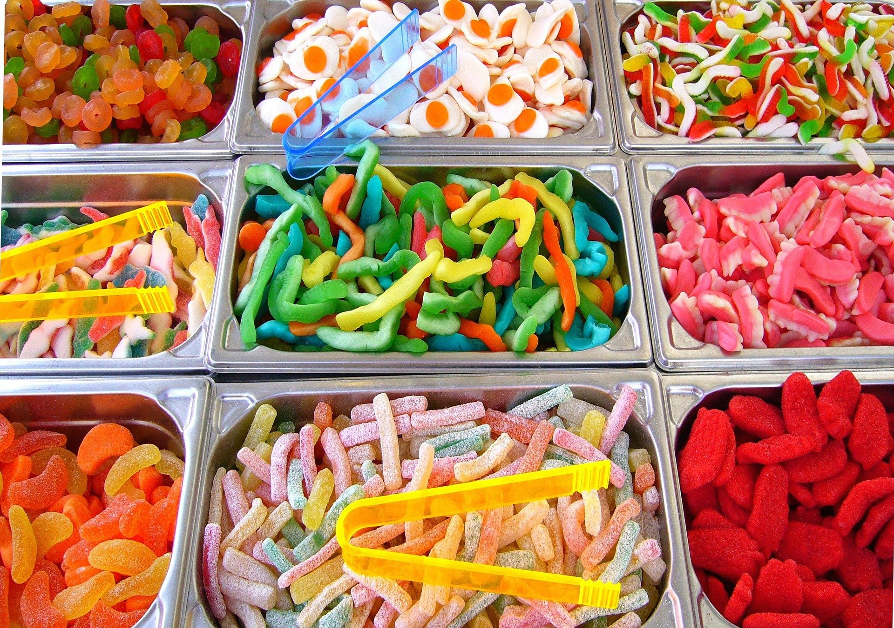

Sweets for the sweet!
Welcome to the Candy Emporium! We have a huge selection of products to satisfy your sweet tooth! If it ain't candy, we ain't got it!
From cotton to rock, we have all types of sweets to keep your diabetes a'hummin' along!
Please see our Products page to see some of our current sale items! We ship in bulk and our walk-in shoppes have candy buffets, so you can sample while you shop!
To keep your candy knowledge sharp, we've provided some sites for you to check up on the following Candy Facts!